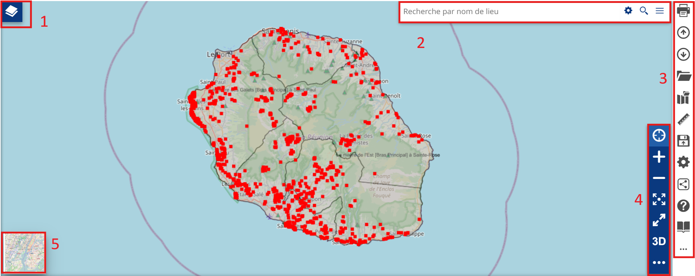

Le visualiseur
Introduction
Le module cartographique de cette plateforme permet de présenter des couches de données géographiques dans un environnement technique. Cette interface permet de représenter plusieurs couches géographiques mais ne peut pas se substituer à l’utilisation complète d’un outil SIG bureautique type QGIS.
L’interface se présente comme ceci :
{kind=link}
1 : l’arborescence des couches
2 : recherche d’un lieu
3 : les fonctionnalités
4 : les outils de navigation
5 : les fonds de plans
Note
La donnée peut ne pas s’afficher si elle n’est pas disponible ou alors dans le mauvais référentiel de coordonnée.
La gestion des couches
Si vous cliquez sur 1, l’arborescence des couches va apparaître et vous pourrez :
rendre visible ou non la couche
modifier l’ordre des couches
modifier l’opacité en pourcentage
{kind=link}
Dans cet onglet, vous pouvez, à l’aide de ces 3 boutons :
{kind=link}
ajouter des données, ce qui ouvrira cette onglet :

Dans cet onglet vous pouvez choisir le catalogue, chercher par mots clés puis ajouter la donnée
ajouter des groupes pour vos données
créer des annotations :

Lorsque vous cliquez sur une couche, plusieurs fonctions apparaissent :

zoomer sur la couche
gérer les réglages de la couche :
{kind=link}
Dans ces réglages vous pouvez modifier, les informations, l’affichage, filtrer les champs, le style et les informations attributaires.
filtrer les couches
ouvrir la table attributaire
supprimer la couche
créer un widget
exporter la couche
voir les métadonnées
Note
Les options sont dépendantes de la donnée, elle peuvent ne pas être toutes disponible en fonction de la donnée.
Pour les fonds de plans, vous pouvez en changer en cliquant sur l’imagette en bas à gauche; :

Les fonctionnalités techniques
Pour ce qui est des différentes fonctionnalités :
{kind=link}
Dans l’ordre, vous pouvez :
imprimer une réalisation :
{kind=link}
Choisir le titre, le format et si la légende apparaît ou non
Note
Ne marche pas pour l’instant.
importer des données
exporter la carte au format WMC
ajouter des données
charger des cartes déjà enregistrées
mesurer des distances
enregistrer la carte :

Vous pouvez choisir une imagette, le titre, vous pouvez aussi, en cliquant sur le crayon, définir un texte qui sera visible à l’ouverture de la carte. Pour définir des droits de lecture et d’édition, vous devez sélectionner un groupe et spécifier si il à les droits de lecture ou d’écriture. L’enregistrement ira dans la page Application.
voir les réglages
partager la réalisation
voir la documentation
faire le tutoriel
effacer la session